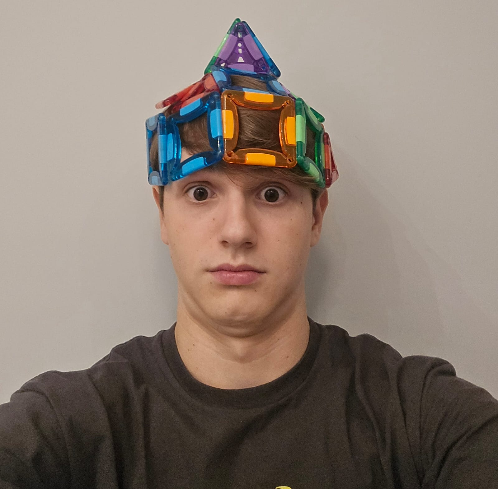

Eduardo Schuchovski dos Reis
Aluno de Ciência da Computação (Bacharelado) - PUCPR
Aluno de Ciência da Computação (Bacharelado) - PUCPR
Tenho 17 anos. Estudo Ciência da Computação na Pontifícia Universidade Católica do Paraná.
Email: eduardoschuchovski@gmail.com
Email Institucional: eduardo.schuchovski@pucpr.edu.br
Telefone: +55 41 98880-2172